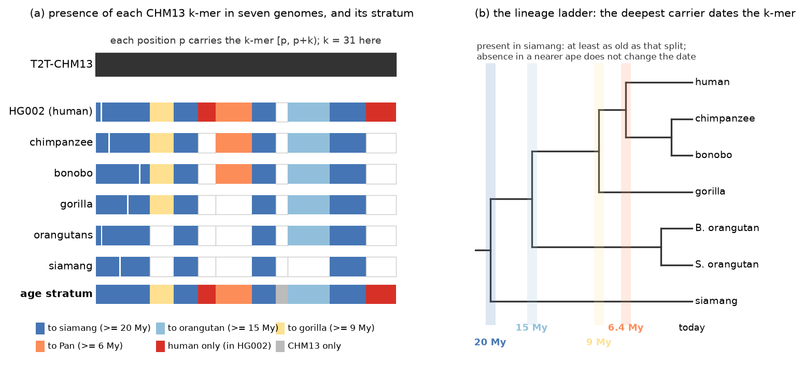
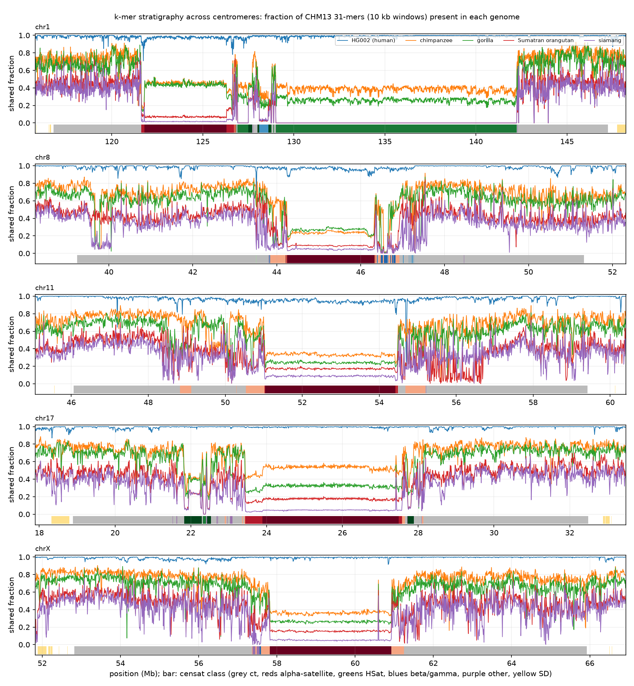
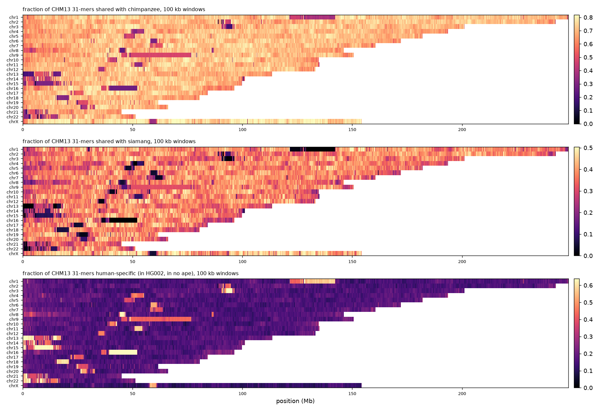
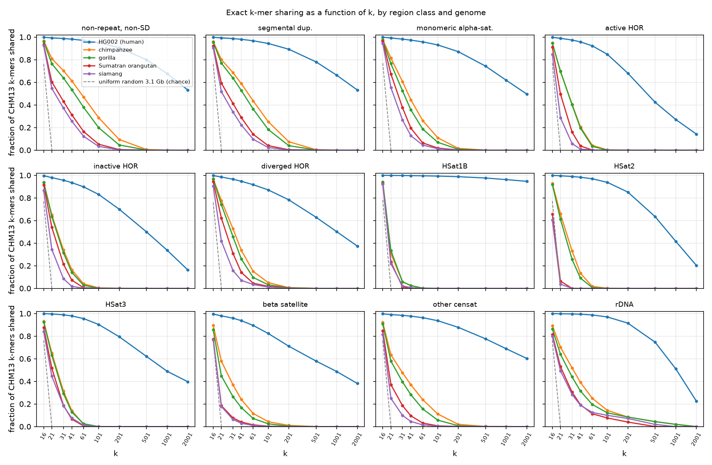

For every base of the complete human genome T2T-CHM13, we asked in which other genomes the exact 31-letter word (k-mer) starting at that base still exists: a second human (HG002, both haplotypes), chimpanzee, bonobo, gorilla, two orangutans and siamang, all complete assemblies. No alignment is involved, so the answer exists inside the centromeres and satellite arrays where conservation scores do not. The deepest lineage that still carries a k-mer dates it, like the deepest rock layer that holds a fossil. This page lets you browse those strata along every chromosome, down to single bases in selected regions.
Whole-genome fractions of CHM13 31-mers. "Human only" = present in HG002 and in no ape; "CHM13 only" = in no other genome.
Browse the strata
Drag to pan; zoom with the + and − buttons, a double-click, or the mouse wheel while holding Ctrl/⌘; hover for values; the URL updates so a view can be shared. Windows are 100 kb, 10 kb or 1 kb depending on zoom. In the spotlight regions (grey-bordered bar above the annotation), zooming below 100 kb shows every base: one row per genome, filled where the 31-mer starting at that base is present, and the age stratum and copy number of the k-mer underneath. Positions in the CHM13v2.0 coordinate system; the annotation bar shows the censat v2.1 classes (reds alpha-satellite, greens HSat, blues beta/gamma satellite, purple other) and segmental duplications (yellow).
How much of each region class is shared, and how old it is
Fraction of CHM13 31-mers present in each genome (%)
Age strata of the 31-mers (% of positions)
The scale of conservation: sharing as a function of k
Every active centromere array
Fraction of the array's 31-mers present in each genome, computed exactly from the base-resolution arrays. Click a row to browse it. Gorilla often shows the highest sharing; read that as repertoire size (the gorilla assembly is the largest, with the largest alpha-satellite repertoire), not as phylogeny.
Kilobases identical between human and gibbon
Stretches of at least 1,001 bases that are letter-for-letter identical between CHM13 and the siamang assembly (found as runs of shared 1001-mers on the 1/8 sample; the true segment may be up to 8 bases longer at each end). Click a row to view the stretch and 3 kb of flanking sequence base by base.
Figures from the report
The idea (top), the strata across five centromeres at 10 kb resolution, the genome-wide view at 100 kb, and sharing as a function of k by region class. Click any figure to open it full size; all figures and the tables behind them are in the repository.
{kind=link}

{kind=link}

{kind=link}

{kind=link}

In brief
Method. The tool kstrata converts each assembly to base codes, then, for each partition of the k-mer key space, sorts the query's (k-mer, position) pairs and merges them with the sorted, deduplicated k-mers of each subject genome to set one presence bit per subject; the run lengths give the multiplicity in the query. Keys are exact for k ≤ 32 and a 61-bit rolling hash above. A 3.1 Gb query against 6 Gb subjects runs in about ten gigabytes of memory; every run here took 8 to 13 minutes on a laptop.
Validation. Every output byte matched brute-force k-mer sets on synthetic genomes. On 5 Mb of chr20 aligned to chimpanzee, every 31-mer the alignment shows as identical is reported present (3,173,630 of 3,173,630). A random genome shares no k-mer above k = 21.
Reading the strata. Presence is presence anywhere in the other genome, not orthology; absence can be mutation, deletion, an unassembled region or an assembly error, so inside satellites the ape-absence rates are upper bounds on turnover. The ape assemblies are haploid representations of diploid genomes. Full methods, tables and limitations are in the repository and the report.